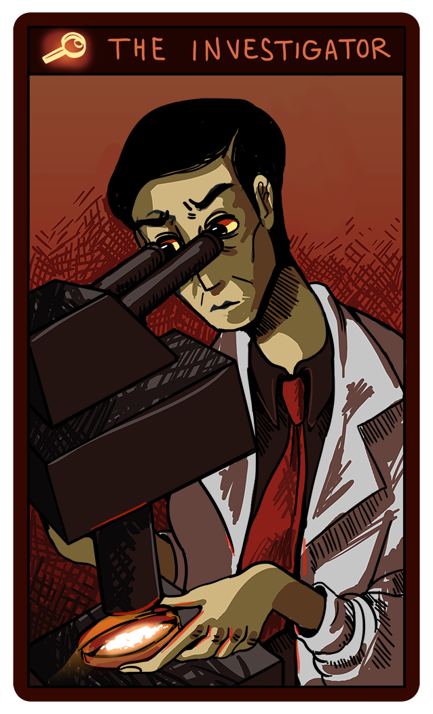
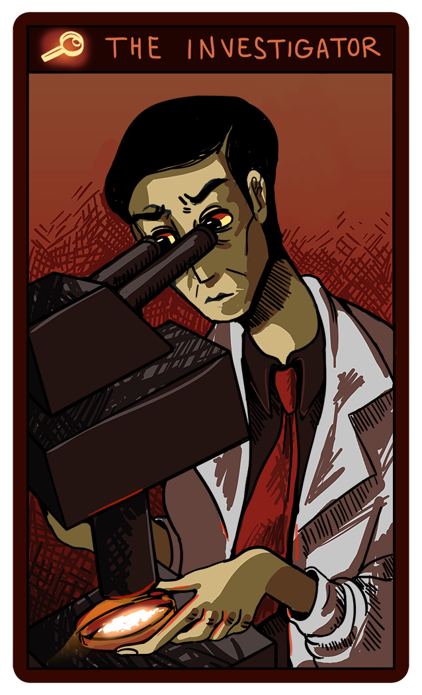

Investigator
Voice 

Process-oriented reformer, figures out what is broken. You get stuck at habits. You see yourself as a protector and steward of the systems and processes that keep the world running, and a mostly silent and invisible but critical part of society. You are used to having people rely on you and you do your best not to disappoint them. You like clear rules and abiding by them as much as possible. You don't trust people who cut corners or improvise to get things done. You detest people who disagree and criticize a lot and suspect they are mostly looking for attention. You need leaders you can trust and look up to at the top but sometimes wish the system could work smoothly without them. The story of the investigator is the morally challenging series of detective stories that leads to greater wisdom.